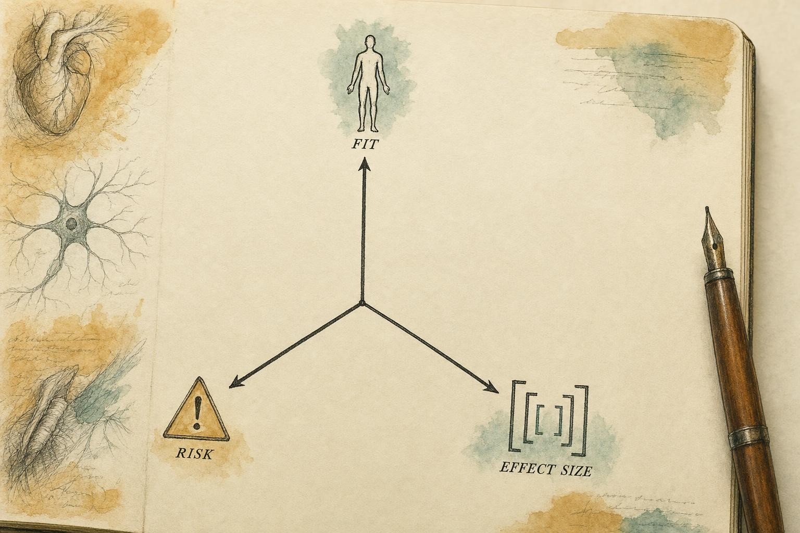
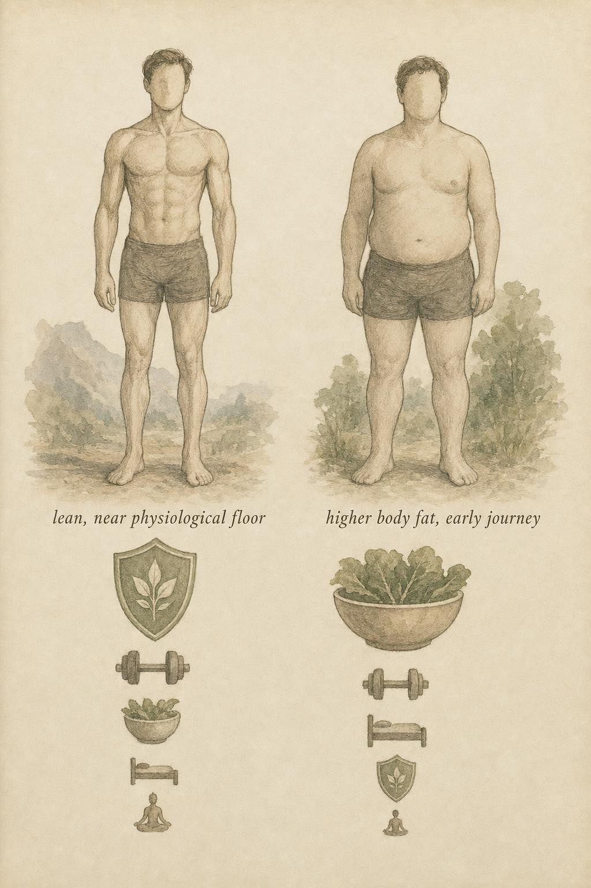

Putting It Together: Population Fit, Risk, and the Line You Do Not Cross
One framework, three axes, and a boundary that never moves.
Two people can occupy the same hour of attention and need almost nothing in common. The first is a physique competitor, eleven weeks out from a show, already lean, sleeping five hours a night, chasing the last stubborn pocket of fat over the lower abdomen. The second is Farah, forty-four years old, a hospital administrative supervisor whose body fat percentage sits north of thirty percent, who has ended three prior weight-loss attempts in regain, and whose resting heart rate suggests she has not walked for exercise in a decade. Someone hands you a single tool, say a green tea catechin extract, a fasted-cardio protocol, or a continuous glucose monitor, and asks the question this entire course has been preparing you to answer: is this a good idea?
The honest reply is that the question is malformed. There is no context-free answer, because there is no context-free person. The same tool is not equally useful across bodies. That single sentence is the thesis of the whole course, and this chapter is where you learn to operationalize it, to turn it from a slogan you agree with into a repeatable method you can run on anyone, including people this course never specifically described.
Operationalize is a deliberate word choice, not decoration. A slogan you agree with changes nothing about what you actually do on a Tuesday afternoon when someone hands you a bottle, a device, or a headline. A method changes what you do, because it forces the same three questions onto every tool before it earns a place in a plan: does this person's physiology and life make them a plausible responder, how large is the honest effect once you strip away the marketing, and what does it cost if you are wrong. Those three questions are the entire content of this chapter, applied first to a framework, then to real cases, then to claims neither you nor this course has ever seen before.
Farah will recur through this chapter as the throughline case, not because her situation matters more than the competitor's, but because it is far more common, and because it is the situation in which getting the framework right or wrong carries the largest real consequence. She is not a patient in this course and not a diagnosis to practice on. She is a stand-in for an honest, unglamorous question: for a real person starting from a real baseline, which of the tools this course has covered actually earns a place in the plan, and which ones are noise dressed up as sophistication.
The Job of This Chapter
You have already learned the parts. What remains is synthesis. A professional does not carry a list of tricks; a professional carries a way of reasoning that produces the right tool for the right body at a defensible magnitude and an acceptable cost. By the end of this chapter you will be able to take any profile, or any novel claim you encounter after the course ends, and reason from physiology to a judgment that is fit-aware, magnitude-aware, and risk-aware, while knowing exactly where your scope ends and a clinician's begins.
Eight Mechanisms, One Frame
Before the three axes can do any work, the parts they operate on need to be back on the table, named plainly and in one place. This is not a review for its own sake. Every case later in this chapter draws directly on these eight mechanisms, and the whole discipline of this capstone is choosing correctly among them.
The fat cell. Every gram of stored fat leaves the adipocyte through the same basic sequence: a catecholamine signal reaches the cell, tips the balance between beta-adrenergic acceleration and alpha-2 adrenergic braking, and activates hormone-sensitive lipase (HSL) to split stored triglyceride into fatty acids and glycerol. Depots richest in alpha-2 receptor density resist that release even when the rest of the body is responding well, which is the actual physiology behind the word stubborn.
The mitochondrion. Releasing a fatty acid is not the same as disposing of it. Oxidative capacity, driven largely by mitochondrial density and enzyme machinery, sets the ceiling on how much of that released fuel is actually burned rather than re-stored. Brown adipose tissue, with its signature uncoupling protein 1 (UCP1), can burn fuel as pure heat, but its total contribution in a lean, temperate-climate adult is small next to the rest of the body's oxidative capacity.
Exercise modality. High-intensity interval training (HIIT), steady-state conditioning, and progressive resistance training each carry a distinct physiological signature, a distinct recovery cost, and a distinct effect on the tissue that keeps a deficit sustainable, namely muscle. None is universally superior. Each earns its place only when matched to a specific recovery ceiling, joint history, and training age.
The insulin lever. Insulin sensitivity governs nutrient partitioning, whether incoming fuel is more likely to be stored or oxidized, and it is one of the clearest real-world examples of a population-fit variable: an identical intervention can produce a wildly different payoff depending on where a person's baseline insulin action sits before they begin.
The supplement shelf. Graded honestly, nearly the entire thermogenic aisle sorts onto a small number of mechanisms: raising the catecholamine signal, releasing the alpha-2 brake, slowing the enzymes that clear the signal, or triggering sympathetic outflow through a separate sensory route. Knowing which mechanism a compound touches lets you predict its honest effect size instead of trusting the label on the bottle.
Adherence physiology. The brain defends its energy stores through appetite and satiety signaling, including hormones such as leptin and ghrelin, and that defense intensifies the leaner a person gets. Adherence is not a character trait. It is a biological and behavioral system with predictable failure points, and protecting it is frequently the single highest-leverage intervention available to you.
Advanced pharmacology. Tools such as glucagon-like peptide-1 (GLP-1) receptor agonists act on appetite and gastric emptying with an effect size that dwarfs almost everything else covered in this course. That size is exactly why they sit strictly on the clinical side of the fence: real mechanism, real magnitude, and entirely out of scope for anyone without a prescribing license.
Eight mechanisms, each already graded on its own terms in its own chapter. What none of those chapters could do alone, because none of them had the whole person in front of them, is tell you which mechanism to reach for first, second, or never, for the specific body asking. That is this chapter's only job, and it is the reason this is the capstone rather than a ninth mechanism.
The Three-Axis Decision Framework
Every decision you make about a fat-loss tool can be resolved onto three independent axes. They are independent on purpose: a tool can score high on one and fail on another, and the failure usually wins. Learn to hold all three at once, and refuse the temptation to average them into a single comfortable number.
Axis One: Population Fit
Population fit asks whether this person's baseline physiology and life circumstances make them a plausible responder to this tool at all. It is the axis most often skipped, and skipping it is why generic advice underperforms so reliably. The Mayo Clinic proof-of-concept study by Cifuentes and colleagues (2023) is the cleanest demonstration in the recent literature. In 165 adults with obesity, matching the intervention to the individual's physiological or behavioral phenotype (abnormal satiation, abnormal post-meal satiety, emotional eating, or a low resting energy expenditure) produced significantly more weight loss over twelve weeks than a standard, one-size lifestyle program: roughly 7.4 kilograms versus 4.3 kilograms. The tools themselves were not exotic. The difference was fit.
Mittendorfer and colleagues (2023) sharpen the point at the level of mechanism. When they induced roughly twenty percent weight loss in women with obesity, they found metabolic "responders" and "non-responders." Baseline insulin action determined how much metabolic benefit the weight loss actually delivered, and once normal insulin sensitivity was reached, further benefit hit a ceiling. Identical weight loss, dramatically different metabolic payoff, decided almost entirely by where the person started. Fit is not a soft variable you nod at and move past. It is often the whole story, and it is the direct real-world expression of the insulin lever this course covered on its own terms earlier.
In practice, checking fit means running through a short mental checklist before anything else: training age, current recovery capacity, adherence history, and psychological relationship to tracking and body image. None of those four require a laboratory test. All four are things you can learn from a conversation, and together they predict more about whether a tool will actually work for this person than the tool's own study data does in isolation. A perfectly evidenced intervention handed to a poor-fit person is not a small win, it is close to a wasted turn.
Axis Two: Honest Effect Size
The second axis asks how much the tool actually moves the needle, expressed as a magnitude with a range, not as a binary "it works." Here you must separate two ideas that casual reading blurs constantly. Schober and colleagues (2018) put it plainly: a p-value tells you nothing about the size of an effect. Statistical significance means an effect is probably not zero; it says nothing about whether the effect is large enough to matter to a human being. Every effect-size estimate should travel with a confidence interval, and clinical importance is a judgment made in context, not a threshold read off a table.
In practice this means you translate any claim into a sentence of the form: for this kind of person, this tool tends to produce about this much change, give or take this much, on top of the fundamentals. This is precisely the discipline the supplement-grading chapter modeled compound by compound. A thermogenic supplement that raises daily energy expenditure by a statistically significant fifteen or twenty kilocalories is real and functionally useless. A structured adherence intervention that keeps someone in a modest deficit for six months instead of six weeks is unglamorous and enormous. Effect size honesty is the antidote to the entire influencer economy, and it is a habit, not a one-time calculation.
Communicating that habit out loud matters as much as calculating it. Saying a supplement "works" invites someone to expect a transformation. Saying it produces, on average, a small and inconsistent nudge on top of a deficit that is already doing the real work sets an expectation that survives contact with reality. People rarely abandon a plan because the truth was too modest. They abandon it because an exaggerated promise collapsed under its own weight, and honest framing is itself a form of risk management for adherence.
Axis Three: Risk
The third axis asks what the tool can cost, and to whom, if things go wrong. Risk is not only physiological harm. It includes opportunity cost (attention spent on a trivial lever is attention stolen from a large one), financial cost, psychological cost (obsessive tracking feeding disordered patterns, a real concern the adherence chapter raised directly), and scope cost, a tool that pulls you across the professional boundary this chapter will spend its second half defending. Risk is asymmetric. A tool with a small upside and a rare but serious downside is usually a bad trade even when the downside is unlikely, because you will deploy it, or advise on it, across many people over many years, and rare events accumulate.
Risk also stacks across a whole program in ways that grading one tool in isolation misses. A fasted training session, a moderate caffeine dose, an aggressive step target, and a tight deficit can each look acceptable individually and still add up to a person who is under-fueled, under-slept, and one bad week away from abandoning the plan entirely. Grading tools one at a time is necessary but not sufficient. The program as a whole carries its own risk score, and that score is frequently higher than any single ingredient suggests.

The three axes are independent, and a failure on any one can veto a tool that looks strong on the others." data-image-idx="0" style="display:block;max-width:100%;max-height:75vh;height:auto;width:auto;margin:0 auto;cursor:pointer;">The framework resolves like this. A tool is worth deploying only when it clears all three axes for this specific person: the person is a plausible responder, the honest magnitude is large enough to matter, and the risk profile is acceptable. Most "advanced" tools fail on effect size, most "aggressive" tools fail on risk, and most "universal" tools fail on fit. The great lie of the plateau is that the answer is always a more exotic tool. Usually the answer is a better-fitted fundamental, chosen from the same eight mechanisms you already know, aimed more precisely.
Integrated Cases Across the Population Spectrum
The framework is abstract until you run real bodies through it. We will take three, deliberately spread across the spectrum, and reason each one from physiology to a graded plan using the eight reactivated mechanisms above. Watch how the ranking of tools inverts as we move along the spectrum. That inversion, more than any single fact in this chapter, is the lesson.
Case A: The Lean Physique Competitor
Female, 29, 17 percent body fat and dropping, five years of training, eleven weeks from stage, sleeping poorly, chasing a stubborn lower-abdominal and hip fat depot. She has read about alpha-2 adrenoceptor density in stubborn fat, remembers it from the fat-cell chapter, and wants to know what to add.
Run the axes. Her fit for exotic fat-oxidation tools is actually low, because she is already near the physiological floor where the binding constraint is recovery, muscle retention, and hormonal function, not a missing thermogenic. Her thermogenic options are the same short list graded in the supplement chapter, caffeine, green tea catechins, yohimbine, and the rest, and every one of them pushes on a beta-adrenergic accelerator that a diet-induced sympathetic tone is already driving hard. There is very little upstream slack left to add to. Her effect sizes for those supplements are trivial relative to the effect size of a well-managed deficit that preserves lean mass, and her risk profile is elevated precisely because she is lean and under-recovered: the poor sleep is not a side issue, it is a lever, and it is the one place her adherence physiology still has real room to improve. Mittendorfer and colleagues (2023) remind us that benefit hits a ceiling once physiology normalizes; she is near several such ceilings already, in insulin action, in recovery capacity, and in how much further the beta pathway can be pushed.
It is worth naming why the thermogenic-tissue chapter does not rescue her either. Cold exposure and other brown-adipose-tissue tools are real mechanisms, but brown fat's total contribution to daily energy expenditure in a lean adult is small next to the rest of her oxidative capacity, and no amount of cold exposure substitutes for the recovery she is not getting. A mechanism being real is not the same as a mechanism being the right lever for this particular body at this particular time, and her case is the cleanest illustration of that gap anywhere in this course.
The honest plan: the biggest available lever is sleep and stress management, followed by protecting training quality and protein intake through the deficit, followed by patient, small adjustments to the deficit itself. Stubborn regional fat resolves largely as total body fat continues to fall, not as a target you can hit directly by releasing one receptor's brake. The glamorous tools she asked about are near the bottom of the list. This is uncomfortable to deliver and it is correct.

The ranking of tools inverts across the spectrum: the same list, reordered by the body in front of you." data-image-idx="1" style="display:block;max-width:100%;max-height:75vh;height:auto;width:auto;margin:0 auto;cursor:pointer;">Case B: The Recreationally Fit Mid-Range Trainee
Male, 38, roughly 24 percent body fat, trains three times a week with decent consistency, sleeps adequately, has plateaued after an initial good run of progress. He wants to know whether to add HIIT, a fat-burner, or fasted cardio.
His fit is broad. He responds to most of the fundamentals because he has not exhausted them the way the competitor has. His largest untapped effect size is almost certainly total daily movement and a modest re-tightening of the deficit that has quietly drifted, exactly the pattern the earliest chapter of this course described as the exhaustion of the easy wins, plus continued progressive resistance training to protect and build the metabolically active tissue that keeps the deficit sustainable. HIIT is a legitimate option here, with a genuine conditioning and time-efficiency benefit, and its risk is low if his recovery supports it. The fat-burner fails on effect size for the same reason it failed for the competitor, it is one of a small number of catecholamine-side mechanisms, and his catecholamine signal is not the binding constraint yet. Fasted cardio fails on the claim it is usually sold on; fed or fasted, the total energy balance over the week is what governs fat loss, and the marginal difference in fat oxidation during the session is not a needle-mover for him.
His insulin lever is worth naming explicitly, because it separates him from both other cases. He is neither near the ceiling the competitor is approaching nor sitting on the enormous, untouched room Farah has. His insulin sensitivity is probably ordinary for an active man his age, which means partitioning tools add a marginal benefit at best, and the honest answer is that his plateau has little to do with insulin at all. It has to do with a deficit that quietly narrowed as his body adapted and his tracking got looser, which is the single most common story behind an intermediate plateau and the least dramatic one to diagnose.
The honest plan: audit and re-establish the deficit, raise NEAT (non-exercise activity thermogenesis) with a concrete step target, keep or add two resistance sessions, and insert intervals only if he enjoys them and recovers from them. Adherence is the hinge, and Lemstra and colleagues (2016) tell us what protects it: greater early results, action-stage readiness, and healthier baseline behaviors, along with supervised, socially supported programs that outperform unsupervised ones. Design the plan to generate a visible early win, because that win is what buys the months of consistency that follow.
Case C: Farah, Higher Body Fat and Early in the Journey
Farah is 44, above 32 percent body fat, largely sedentary, three previous attempts that ended in regain, elevated stress, and low mood on hard days. This is where the framework is most powerful and most humbling, and it is why she opened this chapter.
Her fit for the fundamentals is enormous because she is far from every ceiling. Cifuentes and colleagues (2023) show that phenotype-matched lifestyle intervention produced meaningfully more weight loss in exactly this population, roughly 7.4 kilograms versus 4.3 kilograms over twelve weeks, a difference driven by matching, not by a harsher protocol. Her largest effect sizes by a wide margin are consistent daily movement, a protein-anchored deficit she can actually sustain, resistance training to protect lean mass, and sleep. Her insulin lever has enormous room to move, unlike the competitor's, which is nearly maxed out. Her risk considerations are different in kind: Lemstra and colleagues (2016) identify depression, stress, and strong body-shape concern as predictors of poor adherence, which means the psychological architecture of the plan is not optional, it is load-bearing. Her low mood on hard days is a sign, not a datapoint you get to interpret. It routes to a qualified professional, full stop, a point this chapter returns to directly in its second half.
Her adherence physiology also deserves more than a label. The appetite and satiety system, including hormones such as leptin, which signals stored energy availability, and ghrelin, which rises before meals and drives hunger, defends body weight actively against a deficit, and that defense is a large part of why her three prior attempts ended in regain rather than plateau. She is not fighting a lack of willpower. She is fighting a hunger signal that gets louder the longer a deficit runs, which is precisely why the plan has to be sustainable enough to outlast that signal rather than fast enough to beat it.
It is also worth naming, honestly, that Farah's profile is exactly the kind of case where a clinician might eventually discuss prescription pharmacology, including GLP-1 receptor agonists, given their large effect size in appropriate candidates. That conversation, if it happens, belongs entirely to her physician. Your job is to build the fundamentals so well that whatever a clinician later adds has a stable foundation to work from, not to raise the topic yourself as a recommendation.
The honest plan: the least glamorous tools carry almost the entire load, and the coaching job is to make them fit her life so well that she stays in the action stage long enough for the early win to compound. There is no supplement anywhere on her list that competes with the effect size of eight months of consistency.
Grading New Claims After the Course Ends
You will encounter tools this course never named. That is guaranteed, and it is fine, because the point was never to memorize a list. The point was to build a grading procedure that survives contact with novelty. Here is the procedure, and it is the same one the evidence-based-practice literature formalizes for practicing professionals.
Evidence-based practice (EBP) is not "follow the studies," and it is not "trust experience over data" either. Johnston and colleagues (2019) describe it as three integrated principles: awareness of the best available evidence, an honest accounting of how trustworthy that evidence actually is, and the recognition that evidence alone never settles a decision, because benefits must always be weighed against risk, burden, and cost for a specific person. Ritson, Hearris, and Bannock (2023) adapt this explicitly for practitioners working with real people under real time pressure. Neither the studies alone nor the anecdote alone is EBP. The integration of evidence, professional judgment, and the individual's values and circumstances is the discipline.
The Claim Autopsy, Step by Step
Step 1: Locate the mechanism on the master map. Where does this claim say it acts? Intake, absorption, storage, mobilization, oxidation, expenditure, appetite, or adherence, the same map the fat-cell and mitochondrion chapters built. If a claim cannot name a plausible mechanism, that is itself a grade. If it names one, you can check whether the proposed magnitude is even physically possible given that mechanism, the way the supplement chapter checked whether a thermogenic bump could plausibly explain a claimed pound-a-week result.
Step 2: Estimate honest effect size and variability. What is the realistic magnitude, and how wide is the range across people? Remember Schober and colleagues (2018): significant is not the same as meaningful, and an estimate without a confidence interval is a number pretending to be knowledge. Rate the certainty of the evidence the way the GRADE system does, high, moderate, low, or very low (Johnston et al., 2019). A high-certainty rating means you would be genuinely surprised if further research changed the estimate; a very-low rating means the true effect could plausibly be very different from what one small study suggested. Mechanistic reasoning alone, "it raises this hormone, therefore it should burn fat," sits at the bottom of that ladder, useful for generating a hypothesis and useless as proof on its own.
Step 3: Identify best-fit population. For whom, if anyone, is the effect largest? A claim that helps insulin-resistant beginners may do nothing for a lean, insulin-sensitive athlete who has already reached the ceiling Mittendorfer and colleagues (2023) described. "Works" is always "works for whom," and the answer is frequently "not the person who is most excited about it."
Step 4: Rate risk and scope. What is the downside, how asymmetric is it, and does deploying this tool require you to diagnose, prescribe, or treat? If it does, it is out of scope regardless of how good the evidence is. Scope is a gate, not a slider you can trade against a strong effect size.
Run any claim through those four steps and you will produce a defensible judgment even when you have never seen the tool before. That transferable procedure, not a list of approved products, is what you are actually taking away from this course.
The Permanent Professional and Clinical Boundary
Everything above operates inside a fence, and the fence does not move. State it now in a form you can keep: coaching optimizes training, nutrition, sleep, and behavior. It does not prescribe, diagnose, or treat. Every symptom, every pain, every dysfunction is a sign that warrants professional evaluation, never a finding you interpret and act on yourself.
This is not timidity, and it is not a legal afterthought bolted onto real practice. It is the position the field's own evidence-based guidelines take. Robinson and colleagues (2023), publishing the joint evidence-based practice guideline from the Academy of Nutrition and Dietetics and the American Council on Exercise, are explicit that nutrition and exercise practitioners work within a defined scope, delivering individualized care to adults who are healthy or who carry cardiometabolic risk factors but have no diagnosed disease. The moment a diagnosis enters, so does a different professional, and the guideline is built around that handoff rather than around it.
The ACSM (American College of Sports Medicine) preparticipation screening model (Riebe et al., 2015) draws the same line from the exercise side. It replaced the old risk-stratification scheme with a process built on three questions: is the person currently active, do they show signs or symptoms of cardiovascular, metabolic, or renal disease, and how intense is the exercise they intend to do. The headline is reassuring, exercise is safe for most people, but the model exists precisely to catch the presentations that mandate medical clearance first. Signs and symptoms are the trigger, and recognizing them is a coaching competency; interpreting them is not.
The pharmacology chapter of this course held this line deliberately. Advanced pharmacology, including GLP-1 receptor agonists and other prescription tools, was presented as mechanism and intended benefit only, with no dosing, no protocols, and no sourcing, because the responsible educational job is to help you understand what a clinician's tools do and why, so you can collaborate intelligently and refer well, not to blur into practice you are not licensed for. That restraint was not a gap in the material. It was the material, and the same restraint governs everything in this capstone that touches Farah's eventual conversation with her own physician.
Referring well is itself a skill worth naming plainly, because "stay in your lane" can sound like an instruction to say nothing. It is not. A good referral names the observation without interpreting it, "you mentioned chest tightness during intervals, that is worth a conversation with your physician before we push intensity further," and keeps the training relationship intact while the medical question gets answered by someone qualified to answer it. Silence is not caution, and neither is quietly deciding a symptom is probably nothing. Naming what you noticed, clearly and without alarm, and pointing toward the right professional, is the whole of the skill, and it is well within scope every time.
Evidence-based practice is a thorough, integrated approach based on the best available evidence and expert professional judgment, taking into account the athlete's key performance determinants, values, goals, personal preferences and circumstances.
Ritson, Hearris, and Bannock (2023)
Notice what that definition does. It puts evidence, judgment, and the person on equal footing, and it never once licenses you to step outside your scope in the name of any of them. A tool can be evidence-backed, well-fitted, and low-risk on our three axes and still be forbidden to you because it lives on the other side of the fence. Scope is the gate that sits before the axes, not a fourth axis you can trade against the others.
Where the Arc Resolves
Step back and look at the shape of the whole course. Chapter by chapter you disassembled fat loss into its real physiological parts, the fat cell's tug-of-war, the mitochondrion's ceiling, the honest signature of each exercise modality, the insulin lever, the graded supplement shelf, the biology of adherence, and the mechanisms of pharmacology held at arm's length, and in each chapter the same discipline recurred: grade the tool honestly, ask who it is actually for, and count the true cost. This capstone did not add a ninth mechanism. It gave you the frame that makes the other eight usable on a real person.
The difference between knowing tactics and thinking like a physiologist is exactly this frame. A tactician has a list and reaches for the most impressive item on it. A physiologist has three axes and a fence, runs the body in front of them through both, and arrives, more often than the tactician can bear, at an unglamorous answer that happens to be the correct one. The recurring lesson of this entire course is simple enough to carry in one sentence: the same tool is not equally useful across bodies, and the biggest levers are often the least glamorous.
Farah did not need a more advanced tool. She needed a sustainable deficit, daily movement, resistance training, sleep, and eight months of consistency that no supplement on any shelf could substitute for. The competitor did not need a more advanced tool either. She needed sleep, protected training quality, and patience with a depot that would resolve on its own timeline. Two very different bodies, two very different plans, and one identical method for arriving at both. That method, not any single fact inside it, is what you are taking with you.
Key Takeaways
- Every fat-loss decision resolves onto three independent axes: population fit, honest effect size, and risk. A tool must clear all three for a specific person, and a failure on any one usually vetoes the tool regardless of how strong it looks on the others.
- Fit is often the whole story. Phenotype-matched interventions produced meaningfully more weight loss than generic ones, roughly 7.4 kilograms versus 4.3 kilograms over twelve weeks (Cifuentes et al., 2023), and baseline insulin action determined metabolic payoff, with benefit hitting a ceiling once normal function returned (Mittendorfer et al., 2023).
- Statistical significance is not effect size. Translate every claim into a realistic magnitude with a range, and rate the certainty of the evidence rather than treating a p-value as proof of importance (Schober et al., 2018; Johnston et al., 2019).
- Across the population spectrum, the ranking of tools inverts, but the fundamentals, a sustainable deficit, daily movement, resistance training, and sleep, sit near the top for almost everyone. The biggest levers are usually the least glamorous, and adherence is frequently the single largest one (Lemstra et al., 2016).
- Grade any novel claim in four steps: locate the mechanism, estimate honest effect size and variability, identify the best-fit population, and rate risk and scope. This transferable procedure is the real deliverable of the course.
- A large, real effect size does not override scope. Tools with genuine mechanism and magnitude, including prescription pharmacology, can still be entirely out of bounds for a non-clinician, and recognizing that is itself a professional competency, not a limitation of your knowledge.
- The boundary is permanent. Coaching optimizes training, nutrition, sleep, and behavior; it does not prescribe, diagnose, or treat. Scope is a gate before the axes, and every symptom, pain, or dysfunction is a sign that routes to professional evaluation (Robinson et al., 2023; Riebe et al., 2015).
This is the final chapter, and it is meant to be the one you keep. There is no next mechanism to learn; there is a practice to run. The next time someone hands you a tool, whether that person looks like Farah, like the competitor, or like no one this course described, do not answer the tool. Answer the person, on three axes, inside the fence. That habit is the whole point, and it is now yours.
References
Cifuentes, L., Ghusn, W., Feris, F., Campos, A., Sacoto, D., De la Rosa, A., McRae, A., Rieck, T., Mansfield, S., Ewoldt, J., Friend, J., Grothe, K., Lennon, R. J., Hurtado, M. D., Clark, M. M., Camilleri, M., Hensrud, D. D., & Acosta, A. (2023). Phenotype tailored lifestyle intervention on weight loss and cardiometabolic risk factors in adults with obesity: A single-centre, non-randomised, proof-of-concept study. eClinicalMedicine, 58, 101923. https://www.thelancet.com/journals/eclinm/article/PIIS2589-5370(23)00100-1/fulltext
Johnston, B. C., Seivenpiper, J. L., Vernooij, R. W. M., de Souza, R. J., Jenkins, D. J. A., Zeraatkar, D., Bier, D. M., & Guyatt, G. H. (2019). The philosophy of evidence-based principles and practice in nutrition. Mayo Clinic Proceedings: Innovations, Quality & Outcomes, 3(2), 189 to 199. https://www.sciencedirect.com/science/article/pii/S2542454819300311
Lemstra, M., Bird, Y., Nwankwo, C., Rogers, M., & Moraros, J. (2016). Weight loss intervention adherence and factors promoting adherence: A meta-analysis. Patient Preference and Adherence, 10, 1547 to 1559. https://pmc.ncbi.nlm.nih.gov/articles/PMC4990387/
Mittendorfer, B., Kayser, B. D., Yoshino, M., Yoshino, J., Watrous, J. D., Jain, M., Eagon, J. C., Patterson, B. W., & Klein, S. (2023). Heterogeneity in the effect of marked weight loss on metabolic function in women with obesity. JCI Insight, 8(12), e169541. https://pmc.ncbi.nlm.nih.gov/articles/PMC10371235/
Riebe, D., Franklin, B. A., Thompson, P. D., Garber, C. E., Whitfield, G. P., Magal, M., & Pescatello, L. S. (2015). Updating ACSM's recommendations for exercise preparticipation health screening. Medicine & Science in Sports & Exercise, 47(11), 2473 to 2479. https://pubmed.ncbi.nlm.nih.gov/26473759/
Ritson, A. J., Hearris, M. A., & Bannock, L. G. (2023). Bridging the gap: Evidence-based practice guidelines for sports nutritionists. Frontiers in Nutrition, 10, 1118547. https://pmc.ncbi.nlm.nih.gov/articles/PMC10090397/
Robinson, J., Nitschke, E., Tovar, A., Mattar, L., Gottesman, K., Hamlett, P., & Rozga, M. (2023). Nutrition and physical activity interventions provided by nutrition and exercise practitioners for the general population: An evidence-based practice guideline from the Academy of Nutrition and Dietetics and American Council on Exercise. Journal of the Academy of Nutrition and Dietetics, 123(8), 1215 to 1237. https://www.jandonline.org/article/S2212-2672(23)00186-7/abstract
Schober, P., Bossers, S. M., & Schwarte, L. A. (2018). Statistical significance versus clinical importance of observed effect sizes: What do p values and confidence intervals really represent? Anesthesia & Analgesia, 126(3), 1068 to 1072. https://journals.lww.com/anesthesia-analgesia/fulltext/2018/03000/statistical_significance_versus_clinical.48.aspx